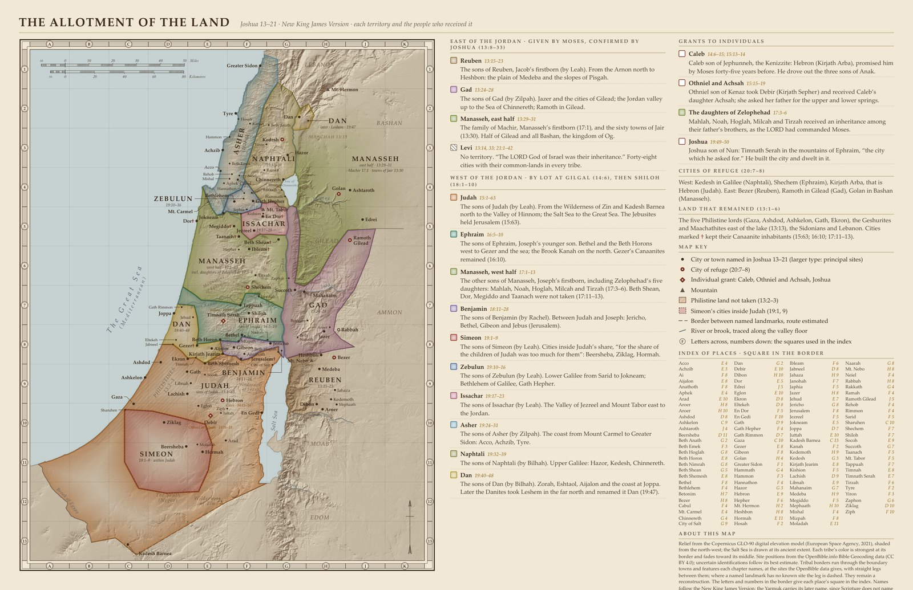

Map of the Twelve Tribes of Israel
The Allotment of the Land · Joshua 13–21: each tribe’s territory and the people who received it

The Allotment of the Land, version 8. Sources: the New King James Version, the Copernicus GLO-90 relief and OpenBible.info’s places. Click the map to enlarge.Full size
A relief map of the land as Joshua 13–21 divides it among the tribes of Israel. Reuben, Gad and half of Manasseh hold the land east of the Jordan that Moses gave them; the other tribes receive theirs by lot at Gilgal and Shiloh, Simeon’s cities lie inside Judah, and Levi has no territory but forty-eight cities among the tribes. Each territory carries its chapter and verses and a note on who received it.
The map marks the six cities of refuge, the grants to Caleb, to Othniel and Achsah, to the daughters of Zelophehad and to Joshua, the Philistine land not taken, and the cities that kept their Canaanite inhabitants. An index gives each of its 110 places a square in the border.
The relief comes from the Copernicus GLO-90 elevation model and the towns are placed by the OpenBible.info Bible Geocoding data; where a site is uncertain, the map follows its best estimate. The borders run through the towns and landmarks each chapter names, with straight legs between them, and remain a reconstruction. Names follow the New King James Version.
Map by View.Bible. Relief from the Copernicus GLO-90 elevation model (ESA, 2021); site positions from OpenBible.info (CC BY 4.0).
When
1451–1444 BC, as Archbishop Ussher reckoned the years: a reckoning from the ages Scripture gives, not a statement of Scripture (how the years are counted).
See it on the timeline →Downloads
East of the Jordan: given by Moses, confirmed by Joshua (13:8–33)
- Reuben 13:15–23
- The sons of Reuben, Jacob’s firstborn (by Leah). From the Arnon north to Heshbon: the plain of Medeba and the slopes of Pisgah.
- Gad 13:24–28
- The sons of Gad (by Zilpah). Jazer and the cities of Gilead; the Jordan valley up to the Sea of Chinnereth; Ramoth in Gilead.
- Manasseh, east half 13:29–31
- The family of Machir, Manasseh’s firstborn (17:1), and the sixty towns of Jair (13:30). Half of Gilead and all Bashan, the kingdom of Og.
- Levi 13:14, 33; 21:1–42
- No territory. “The LORD God of Israel was their inheritance.” Forty-eight cities with their common-lands in every tribe.
West of the Jordan: by lot at Gilgal (14:6), then Shiloh (18:1–10)
- Judah 15:1–63
- The sons of Judah (by Leah). From the Wilderness of Zin and Kadesh Barnea north to the Valley of Hinnom; the Salt Sea to the Great Sea. The Jebusites held Jerusalem (15:63).
- Ephraim 16:5–10
- The sons of Ephraim, Joseph’s younger son. Bethel and the Beth Horons west to Gezer and the sea; the Brook Kanah on the north. Gezer’s Canaanites remained (16:10).
- Manasseh, west half 17:1–13
- The other sons of Manasseh, Joseph’s firstborn, including Zelophehad’s five daughters: Mahlah, Noah, Hoglah, Milcah and Tirzah (17:3–6). Beth Shean, Dor, Megiddo and Taanach were not taken (17:11–13).
- Benjamin 18:11–28
- The sons of Benjamin (by Rachel). Between Judah and Joseph: Jericho, Bethel, Gibeon and Jebus (Jerusalem).
- Simeon 19:1–9
- The sons of Simeon (by Leah). Cities inside Judah’s share, “for the share of the children of Judah was too much for them”: Beersheba, Ziklag, Hormah.
- Zebulun 19:10–16
- The sons of Zebulun (by Leah). Lower Galilee from Sarid to Jokneam; Bethlehem of Galilee, Gath Hepher.
- Issachar 19:17–23
- The sons of Issachar (by Leah). The Valley of Jezreel and Mount Tabor east to the Jordan.
- Asher 19:24–31
- The sons of Asher (by Zilpah). The coast from Mount Carmel to Greater Sidon: Acco, Achzib, Tyre.
- Naphtali 19:32–39
- The sons of Naphtali (by Bilhah). Upper Galilee: Hazor, Kedesh, Chinnereth.
- Dan 19:40–48
- The sons of Dan (by Bilhah). Zorah, Eshtaol, Aijalon and the coast at Joppa. Later the Danites took Leshem in the far north and renamed it Dan (19:47).
Grants to individuals
- Caleb 14:6–15; 15:13–14
- Caleb son of Jephunneh, the Kenizzite: Hebron (Kirjath Arba), promised him by Moses forty-five years before. He drove out the three sons of Anak.
- Othniel and Achsah 15:15–19
- Othniel son of Kenaz took Debir (Kirjath Sepher) and received Caleb’s daughter Achsah; she asked her father for the upper and lower springs.
- The daughters of Zelophehad 17:3–6
- Mahlah, Noah, Hoglah, Milcah and Tirzah received an inheritance among their father’s brothers, as the LORD had commanded Moses.
- Joshua 19:49–50
- Joshua son of Nun: Timnath Serah in the mountains of Ephraim, “the city which he asked for.” He built the city and dwelt in it.
Cities of refuge (20:7–8)
West: Kedesh in Galilee (Naphtali), Shechem (Ephraim), Kirjath Arba, that is Hebron (Judah). East: Bezer (Reuben), Ramoth in Gilead (Gad), Golan in Bashan (Manasseh).
Land that remained (13:1–6)
The five Philistine lords (Gaza, Ashdod, Ashkelon, Gath, Ekron), the Geshurites and Maachathites east of the lake (13:13), the Sidonians and Lebanon. Cities marked † kept their Canaanite inhabitants (15:63; 16:10; 17:11–13).
Index of places (110)
Each place’s square in the map’s border: letters across, numbers down.
- Acco E 4
- Achzib E 3
- Ai F 8
- Aijalon E 8
- Anathoth F 8
- Aphek E 4
- Arad E 10
- Aroer H 8
- Aroer H 10
- Ashdod D 8
- Ashkelon C 9
- Ashtaroth J 4
- Beersheba D 11
- Beth Anath G 2
- Beth Emek F 3
- Beth Hoglah G 8
- Beth Horon E 8
- Beth Nimrah G 8
- Beth Shean G 5
- Beth Shemesh E 8
- Bethel F 8
- Bethlehem F 4
- Betonim H 7
- Bezer H 8
- Cabul F 4
- Mt. Carmel E 4
- Chinnereth G 4
- City of Salt G 9
- Dan G 2
- Debir E 10
- Dibon H 10
- Dor E 5
- Edrei J 5
- Eglon E 10
- Ekron D 8
- Eltekeh D 8
- En Dor F 5
- En Gedi F 10
- Gath D 9
- Gath Hepher F 4
- Gath Rimmon D 7
- Gaza C 10
- Gezer E 8
- Gibeon F 8
- Golan H 4
- Greater Sidon F 1
- Hammath G 4
- Hammon F 3
- Hannathon F 4
- Hazor G 3
- Hebron E 9
- Hepher F 6
- Mt. Hermon H 2
- Heshbon H 8
- Hormah E 11
- Hosah F 2
- Ibleam F 6
- Jabneel D 8
- Jahaza H 9
- Janohah F 7
- Japhia F 5
- Jazer H 8
- Jehud E 7
- Jericho G 8
- Jerusalem F 8
- Jezreel F 5
- Jokneam E 5
- Joppa D 7
- Juttah E 10
- Kadesh Barnea C 13
- Kanah F 2
- Kedemoth H 9
- Kedesh G 3
- Kirjath Jearim E 8
- Kishion F 5
- Lachish D 9
- Libnah E 9
- Mahanaim G 7
- Medeba H 9
- Megiddo F 5
- Mephaath H 10
- Mishal F 4
- Mizpah F 8
- Moladah E 11
- Naarah G 8
- Mt. Nebo H 8
- Neiel F 4
- Rabbah H 8
- Rakkath G 4
- Ramah F 4
- Ramoth Gilead J 5
- Rehob F 4
- Rimmon F 4
- Sarid F 5
- Sharuhen C 10
- Shechem F 7
- Shiloh F 7
- Socoh E 9
- Succoth G 7
- Taanach F 5
- Mt. Tabor F 5
- Tappuah F 7
- Timnah E 8
- Timnath Serah E 7
- Tirzah F 6
- Tyre F 2
- Yiron F 3
- Zaphon G 6
- Ziklag D 10
- Ziph F 10
Sources
New King James Version
Names, spellings, ages and short quotations.
Scripture taken from the New King James Version®. Copyright © 1982 by Thomas Nelson. Used by permission. All rights reserved.
Copernicus GLO-90 digital elevation model
The shaded relief.
© DLR e.V. 2010–2014 and © Airbus Defence and Space GmbH 2014–2018 provided under COPERNICUS by the European Union and ESA; all rights reserved.
Copernicus DEM, https://spacedata.copernicus.eu/collections/copernicus-digital-elevation-model
OpenBible.info Bible Geocoding data
The positions of the towns.
Site positions adapted from the Bible Geocoding data at OpenBible.info (https://www.openbible.info/geo/), licensed under CC BY 4.0 (https://creativecommons.org/licenses/by/4.0/). Uncertain identifications follow its best estimate.
Every source the site uses: Sources.
How to cite
From View.Bible, The Allotment of the Land (Joshua 13–21), version 8, https://view.bible/joshua-allotment-map/, CC BY 4.0.